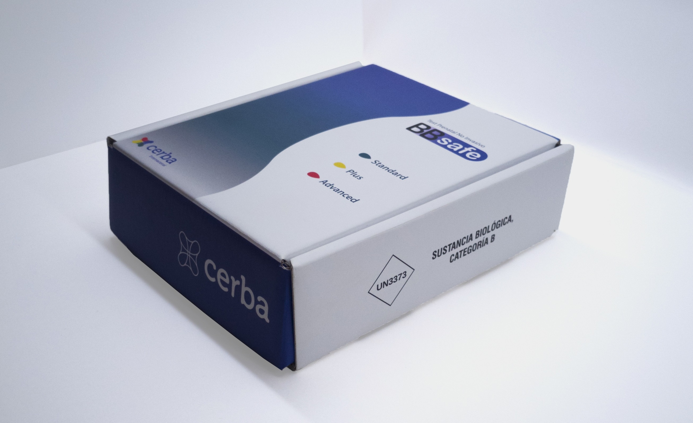
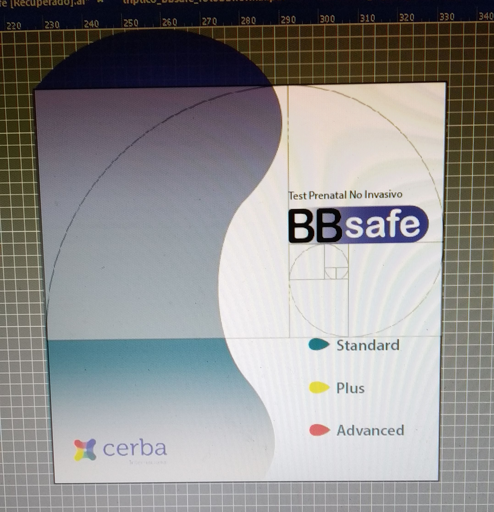
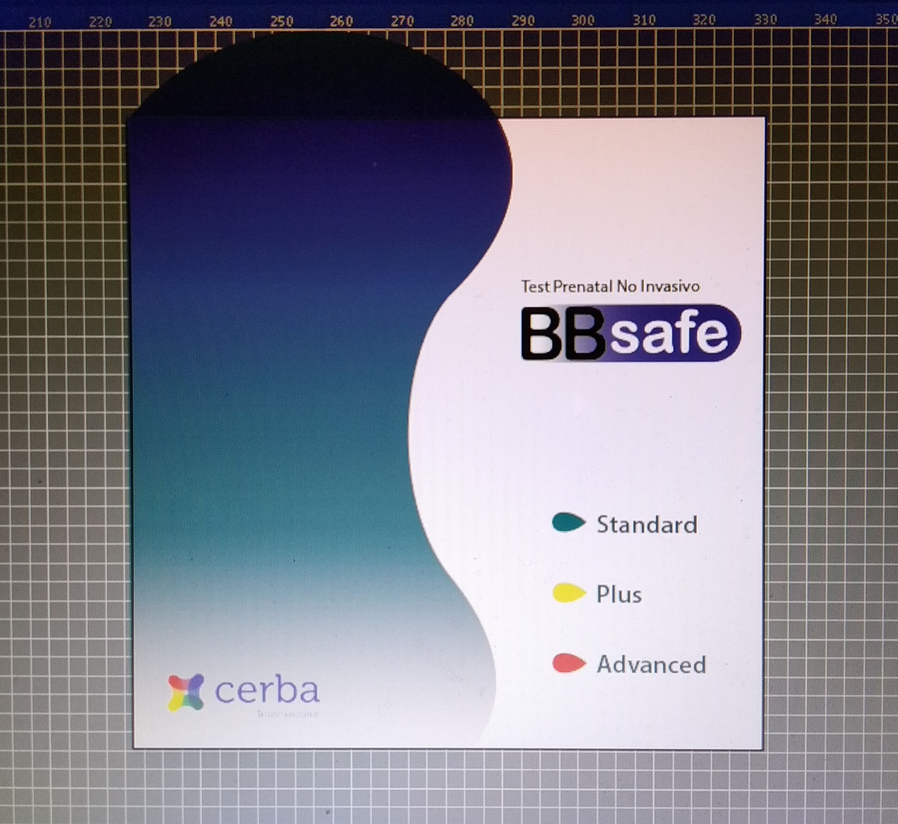
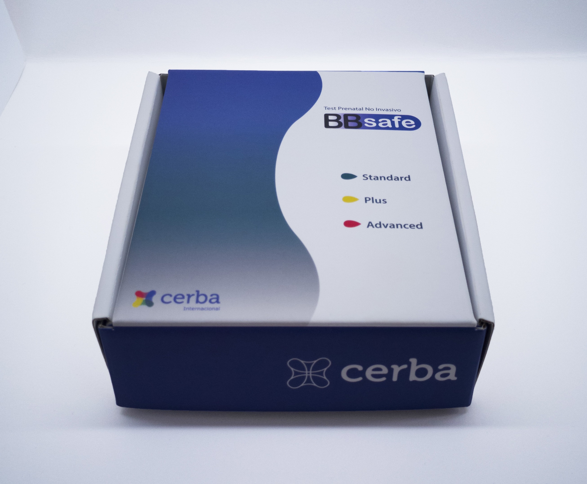
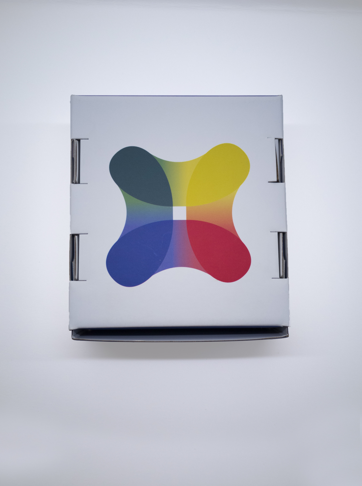
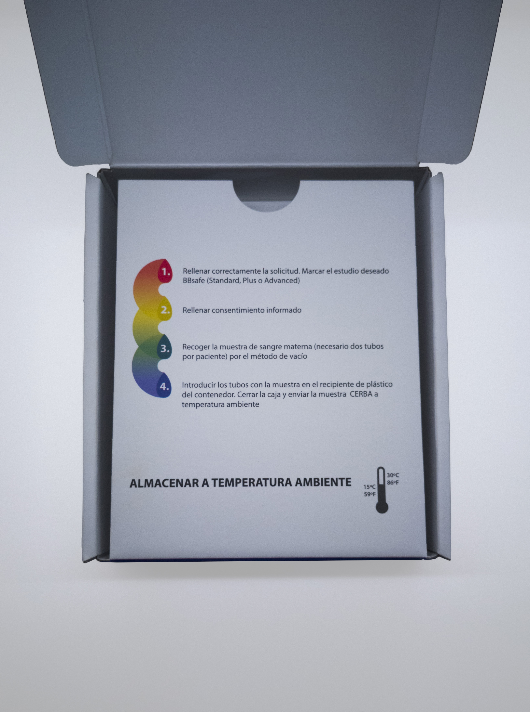
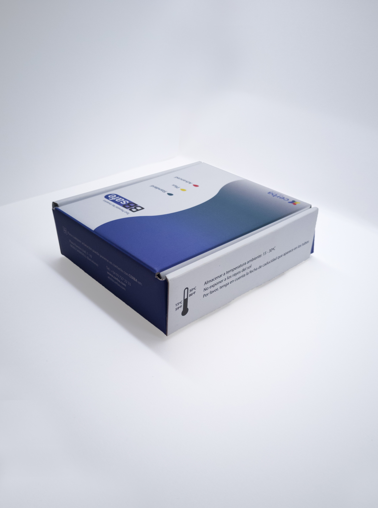

Packaging BBsafe - Cerba
Design of both the packaging structure and printed graphics for a biological sample transport solution for Cerba Internacional, S.A.

Overview
This project was commissioned by Cerba Internacional, S.A. and involved the design of packaging used to transport biological samples for laboratory pregnancy analysis.
The scope included both the structural packaging design and the printed graphics applied to the box. The solution needed to safely contain the samples while also communicating a large amount of information, including handling instructions, test information, storage requirements, and transport guidelines.
The challenge was to create packaging that was functional, easy to understand, and compliant with the practical requirements of laboratory sample transportation.
Problem & Goals
The packaging needed to fulfill two essential functions: safely transporting biological samples and clearly communicating all necessary information to users and laboratory staff.
A significant challenge was the amount of information that needed to be displayed on a limited surface area. Instructions, temperature requirements, test descriptions, sample identification, and transport guidance all had to coexist without compromising readability.
The primary goals were:
• Design a box structure suitable for sample transportation.
• Organize technical information in a clear and accessible way.
• Maintain readability despite the large amount of required content.
• Create a professional appearance aligned with Cerba's brand identity.
Process
Research & Observation
The first stage of the project involved discussions with the Cerba team to understand the technical specifications, transportation requirements, and mandatory information that needed to appear on the packaging.
I reviewed existing sample transport packaging and analyzed how information was organized on similar medical and laboratory products. Particular attention was given to hierarchy, readability, and the placement of critical instructions to ensure that important information could be located quickly.
This research helped define the structure of the packaging and informed decisions regarding typography, information grouping, and visual hierarchy.
Information Architecture
One of the most important aspects of this project was organizing a large amount of technical information within a limited space.
To improve readability, related information was grouped into sections and distributed across different faces of the packaging according to its importance and frequency of use.
Special attention was given to instructions, sample identification, and transport requirements, ensuring that critical information remained visible and easy to locate.
Structural Design
In addition to the printed graphics, the project required the design of the packaging structure itself.
Different folding and assembly solutions were evaluated to ensure the box could securely contain the samples while remaining practical to manufacture, assemble, and transport.
The final structure was designed to maximize the available space for information while maintaining durability and ease of use.


Design Iterations
Several versions of the packaging layout were explored before reaching the final solution.
Different information arrangements were tested to find the most efficient way of presenting the required content while maintaining readability across all sides of the box.
These iterations helped refine both the structure of the packaging and the organization of the printed information.


Final Outcome





The final solution combined structural packaging design with a clear and organized graphic system capable of communicating complex information effectively.
The packaging provided a practical solution for transporting biological samples while maintaining readability and supporting the operational needs of both users and laboratory personnel.
By carefully organizing content and prioritizing key information, the final design balanced functionality, safety, and visual clarity.
Reflection
This project taught me the importance of information hierarchy when designing for highly constrained environments.
Unlike many graphic design projects where aesthetics are the primary focus, the success of this packaging depended on usability and clarity. Every design decision had to support the accurate communication of information while working within strict space limitations.
It reinforced how effective design can simplify complex processes and improve the experience of interacting with technical products.